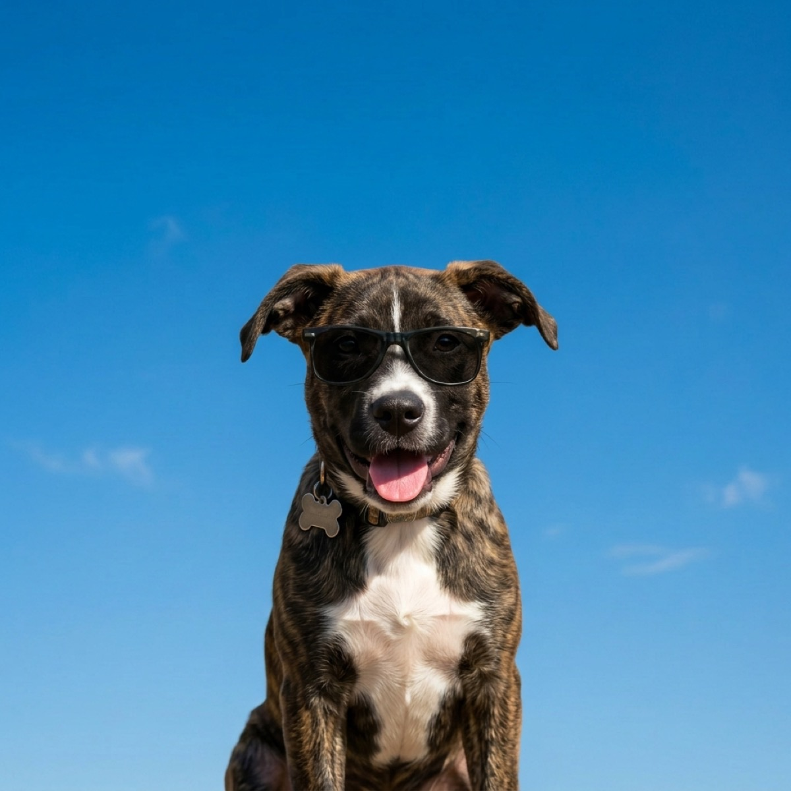

How to Keep Your Dog Hydrated on Hot Days
Dogs cannot sweat their way cool the way we do, so on a hot day water is not a nice-to-have, it is the whole game. Here is how much your dog actually needs, how to spot trouble early, and a few easy tricks to get even a stubborn non-drinker to sip more.
How much water does a dog really need?
A good baseline is about one ounce of water per pound of body weight per day. So a 50 pound dog needs roughly 50 ounces, a little over six cups, just to cover normal days. On a hot or active day that number climbs, sometimes well past it, because every pant is moisture leaving the body.
Panting is the point worth understanding. Dogs shed heat mainly by panting and a little through their paw pads, not by sweating across their skin like people do. The AVMA's warm weather pet safety guidance stresses constant access to fresh, clean water and shade whenever it is hot. Every minute of heavy panting is water your dog has to replace, so the hotter and more humid the day, the faster the bowl empties.

The warning signs of a dehydrated dog
Catching dehydration early is far easier than treating it late. Watch for these:
- The skin tent test. Gently lift the skin between the shoulder blades and let go. On a well-hydrated dog it snaps back instantly. If it is slow to settle, that is a red flag.
- Dry or tacky gums. Healthy gums are slick and wet. Press a finger to them: the pink should return within about two seconds. Pale, dry, or sticky gums mean trouble.
- Thick drooping, sunken eyes, lethargy. A dog that is suddenly flat, wobbly, or glassy-eyed on a hot day needs water and shade now, not later.
- Reduced skin elasticity and a dry nose. Useful supporting clues, though the gums and skin tent are the quicker checks.
The AKC's guide to dehydration in dogs walks through these signs in more detail and notes when it tips into an emergency. If your dog shows several signs at once, especially with vomiting or collapse, call your vet right away. Dehydration and heatstroke travel together.
Easy ways to get a reluctant drinker to sip more
Some dogs just are not big drinkers, and that is exactly the dog who gets into trouble in July. A few tricks that work:
- Put out more bowls. One by the door, one where the dog naps, one near the food. Dogs drink more when water is always within a few steps.
- Keep it cool and fresh. Refresh the bowl a couple of times a day and drop in a few ice cubes. Most dogs prefer cool water and will drink more of it.
- Add water to meals. A splash of warm water or a spoon of wet food turns dry kibble into a hydration boost. Many dogs happily lap the bowl after.
- Make hydration a treat. Frozen low-sodium broth cubes, a few chunks of watermelon (no seeds or rind), or a frozen stuffed toy all sneak in water while feeling like a snack.
- Try moving water. Plenty of dogs and cats drink more from a running stream than a still bowl. A pet fountain keeps water circulating, cool, and more interesting.
Carry water on every summer walk too. A collapsible bowl and a bottle in your bag means you can offer a drink at the halfway point instead of pushing your dog to tough it out until home.
Plan around the heat, not against it
The simplest hydration strategy is timing. Walk in the cooler edges of the day, early morning and after sunset, and your dog loses far less water than on a noon outing on hot pavement. Humidity matters as much as the raw temperature, because muggy air makes panting less effective, so a sticky 85 degree day can be harder than a dry 92. This is where a glance at the forecast pays off: with WeatherPets, your own dog delivers the day's high and a Live Activity that tracks conditions in real time, which turns "I should check the heat first" into something you actually do before you grab the leash.
Gear that helps: a stainless steel pet fountain keeps water cool and moving so picky dogs drink more. See our full picks in the best pet water fountains.
WeatherPets is an Amazon Associate and may earn from qualifying purchases, at no extra cost to you.